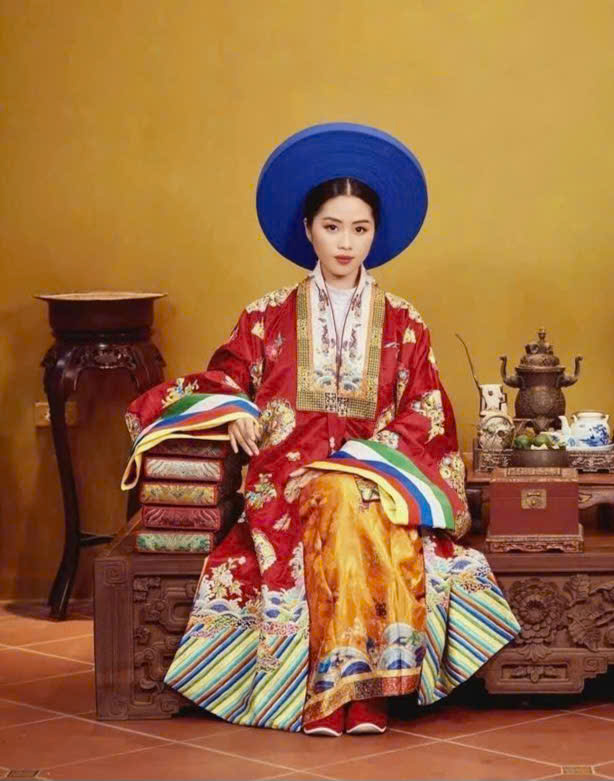
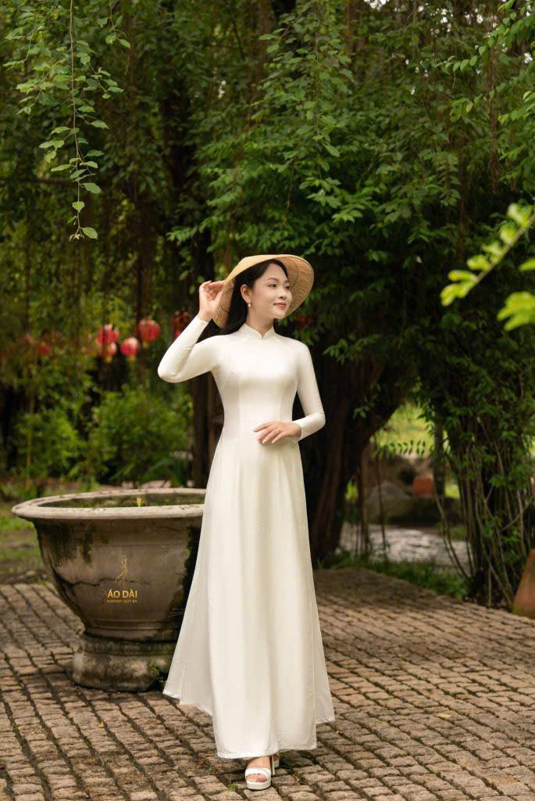
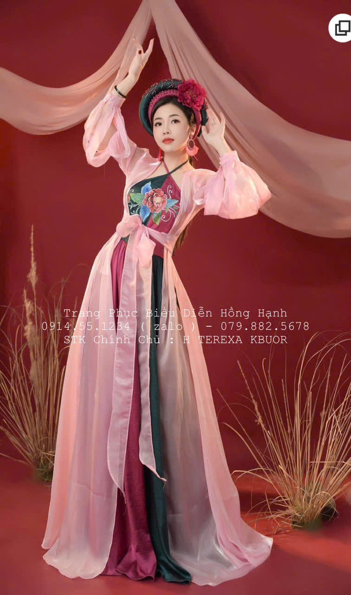

Áo Nhật Bình là lễ phục cao cấp của phụ nữ hoàng tộc triều Nguyễn, nổi bật với cổ áo lớn, dáng đối khâm và hoa văn thêu tinh xảo. Trang phục này thể hiện sự quyền quý, uy nghi và thường được sử dụng trong các dịp lễ nghi quan trọng.

Áo dài truyền thống mang kiểu dáng quen thuộc với cổ cao, tay dài, tà áo dài xẻ hai bên, thường được may từ chất liệu mềm mại, tạo nên vẻ thanh lịch và tinh khôi. Đây là hình ảnh gần gũi, gắn liền với đời sống thường ngày và nét đẹp người phụ nữ Việt.

Áo tứ thân là nét đẹp dịu dàng của văn hóa Việt Nam, gắn liền với hình ảnh người phụ nữ Bắc Bộ xưa. Với bốn thân áo mềm mại buông rủ, trang phục này không chỉ tôn lên vẻ duyên dáng, kín đáo mà còn thể hiện sự tần tảo, thủy chung và đức hi sinh. Thường được kết hợp cùng yếm đào và dải thắt lưng, áo tứ thân mang vẻ đẹp giản dị mà thanh nhã. Trải qua thời gian, tà áo ấy vẫn hiện diện như biểu tượng của hồn quê, nhắc nhở mỗi người về truyền thống và cội nguồn cần được gìn giữ, trân trọng.